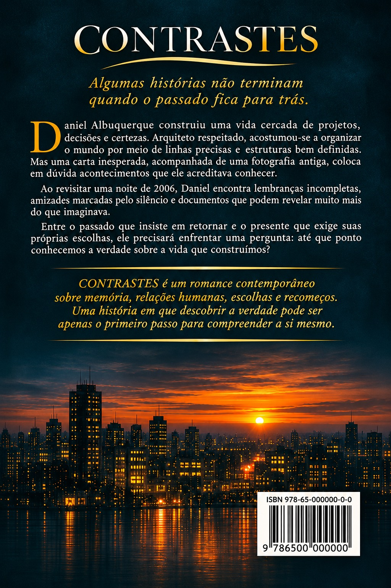
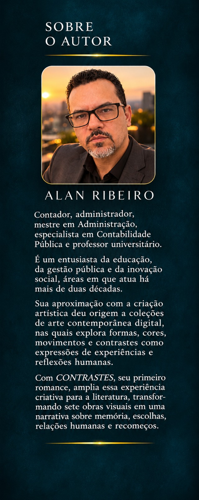

Em destaque · Romance
CONTRASTES
Um romance sobre memória, escolhas e recomeços.
Uma fotografia antiga. Uma carta inesperada. Um passado que insiste em retornar.
Conheça Daniel Albuquerque, um arquiteto que vê suas certezas abaladas quando acontecimentos esquecidos começam a revelar novas verdades.
Sete obras. Sete capítulos. Uma história.
Sete composições de arte contemporânea digital criadas por Alan Ribeiro inspiraram os sete capítulos de CONTRASTES.


Sobre o autor

Alan Ribeiro
Contador, administrador, mestre em Administração, especialista em Contabilidade Pública e professor universitário.
É um entusiasta da educação, da gestão pública e da inovação social, áreas em que atua há mais de duas décadas.
Sua aproximação com a criação artística deu origem a coleções de arte contemporânea digital, nas quais explora formas, cores, movimentos e contrastes como expressões de experiências e reflexões humanas.
Com CONTRASTES, seu primeiro romance, amplia essa experiência criativa para a literatura, transformando sete obras visuais em uma narrativa sobre memória, escolhas, relações humanas e recomeços.
Artes
Novas coleções de arte contemporânea digital ganharão páginas próprias aqui.
Ir para a seção de artes →